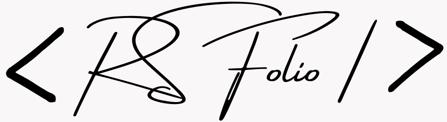

<mat-toolbar color="primary" class="island-navbar">
    <div class="island-container" [class.scrolled]="isScrolled">
        <span class="logo"></span>
        <span class="spacer"></span>

        <!-- Desktop Links -->
        <div class="nav-links desktop-only">
            <button mat-button routerLink="/" fragment="home" routerLinkActive="active">Home</button>
            <button mat-button routerLink="/" fragment="about" routerLinkActive="active">About</button>
            <button mat-button routerLink="/" fragment="projects" routerLinkActive="active">Projects</button>
            <button mat-button routerLink="/" fragment="experience" routerLinkActive="active">Experience</button>
            <button mat-button routerLink="/" fragment="contact" routerLinkActive="active">Contact</button>
        </div>

        <!-- Mobile Toggle -->
        <button class="mobile-toggle" (click)="toggleMenu()" [class.active]="isMenuOpen" aria-label="Toggle Menu">
            <span class="bar"></span>
            <span class="bar"></span>
            <span class="bar"></span>
        </button>
    </div>
</mat-toolbar>

<!-- Mobile Navigation Overlay -->
<div class="mobile-nav" [class.open]="isMenuOpen">
    <div class="mobile-links">
        <a routerLink="/" fragment="home" routerLinkActive="active" (click)="closeMenu()">Home</a>
        <a routerLink="/" fragment="about" routerLinkActive="active" (click)="closeMenu()">About</a>
        <a routerLink="/" fragment="projects" routerLinkActive="active" (click)="closeMenu()">Projects</a>
        <a routerLink="/" fragment="experience" routerLinkActive="active" (click)="closeMenu()">Experience</a>
        <a routerLink="/" fragment="contact" routerLinkActive="active" (click)="closeMenu()">Contact</a>
    </div>
</div>